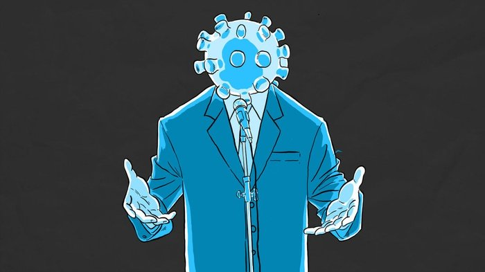
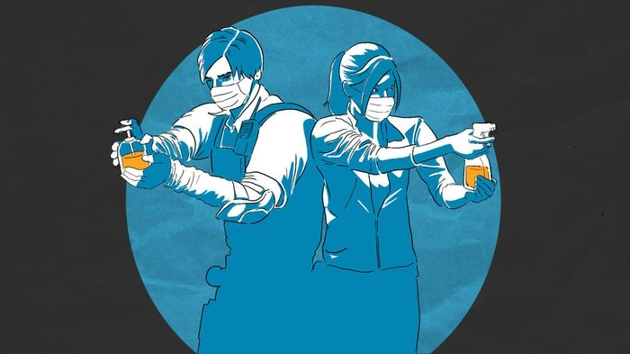

Covid-19 (Corona Virus)
Sumber: https://mmc.tirto.id/image/otf/700x0/2020/03/09/hl-corona-lugas-2_ratio-16x9.jpg
Virus Corona atau severe acute respiratory syndrome coronavirus 2 (SARS-CoV-2) adalah virus yang menyerang sistem pernapasan. Penyakit karena infeksi virus ini disebut COVID-19. Virus Corona bisa menyebabkan gangguan pada sistem pernapasan, pneumonia akut, sampai kematian.
Coronavirus adalah kumpulan virus yang bisa menginfeksi sistem pernapasan. Pada banyak kasus, virus ini hanya menyebabkan infeksi pernapasan ringan, seperti flu. Namun, virus ini juga bisa menyebabkan infeksi pernapasan berat, seperti infeksi paru-paru (pneumonia), Middle-East Respiratory Syndrome (MERS), dan Severe Acute Respiratory Syndrome (SARS).
Penyebab Virus Corona

Sumber: https://mmc.tirto.id/image/otf/700x0/2020/03/10/ilustrasi-corona-3--hl--lugas_ratio-16x9.jpg
Infeksi virus Corona atau COVID-19 disebabkan oleh coronavirus, yaitu kelompok virus yang menginfeksi sistem pernapasan. Pada sebagian besar kasus, coronavirus hanya menyebabkan infeksi pernapasan ringan sampai sedang, seperti flu. Akan tetapi, virus ini juga bisa menyebabkan infeksi pernapasan berat, seperti pneumonia, Middle-East Respiratory Syndrome (MERS), dan Severe Acute Respiratory Syndrome (SARS).
Seseorang dapat tertular COVID-19 melalui berbagai cara, yaitu:
- Tidak sengaja menghirup percikan ludah dari bersin atau batuk penderita COVID-19
- Memegang mulut atau hidung tanpa mencuci tangan terlebih dulu setelah menyentuh benda yang terkena cipratan air liur penderita COVID-19
- Kontak jarak dekat dengan penderita COVID-19, misalnya bersentuhan atau berjabat tangan
Pencegahan Virus Corona

Sumber: https://mmc.tirto.id/image/otf/700x0/2020/03/09/ilustrasi-1-hl-corona-01tirto.id-lugas_ratio-16x9.jpg
Sampai saat ini, belum ada vaksin untuk mencegah infeksi virus Corona atau COVID-19. Oleh sebab itu, cara pencegahan yang terbaik adalah dengan menghindari faktor-faktor yang bisa menyebabkan Anda terinfeksi virus ini, yaitu:
- Hindari bepergian ke tempat-tempat umum yang ramai pengunjung (social distancing).
- Gunakan masker saat beraktivitas di tempat umum atau keramaian.
- Rutin mencuci tangan dengan air dan sabun atau hand sanitizer yang mengandung alkohol minimal 60% setelah beraktivitas di luar rumah atau di tempat umum.
- Meningkatkan daya tahan tubuh dengan pola hidup sehat.
- Jangan menyentuh mata, mulut, dan hidung sebelum mencuci tangan.
- Hindari kontak dengan hewan, terutama hewan liar. Bila terjadi kontak dengan hewan, cuci tangan setelahnya.
- Tutup mulut dan hidung dengan tisu saat batuk atau bersin, kemudian buang tisu ke tempat sampah.
Untuk orang yang diduga terkena COVID-19 atau termasuk kategori ODP (orang dalam pemantauan), ada beberapa langkah yang bisa dilakukan agar virus Corona tidak menular ke orang lain, yaitu:
- Hindari bepergian ke tempat-tempat umum yang ramai pengunjung (social distancing).
- Gunakan masker saat beraktivitas di tempat umum atau keramaian.
- Rutin mencuci tangan dengan air dan sabun atau hand sanitizer yang mengandung alkohol minimal 60% setelah beraktivitas di luar rumah atau di tempat umum.
Sumber
{kind=link}
{kind=link}
{kind=link}